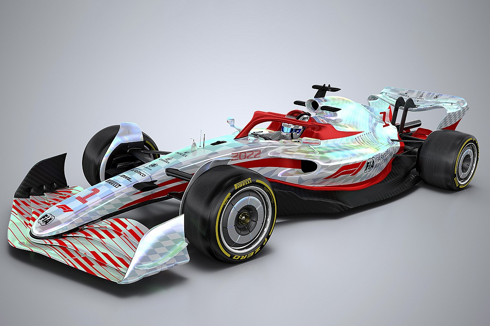

Con la presentación del Alfa Romeo C42 ya quedaron develados todos los
monoplazas que competirán en la temporada 2022 de la Fórmula 1, que
promete ser divertida y más pareja a causa de los cambios técnicos y
topes económicos que introdujo la FIA con el objetivo de que haya más
"competencia en la pista" y paridad entre los pilotos. Entre las
principales novedades del Reglamento Técnico se destaca el regreso del
efecto suelo, que había estado prohibido desde 1982 por un tema de
seguridad, y que ahora volvió con el fin de generar una mayor carga
areodinámica en el monoposto de F1. El fin es claro: se busca que, a
causa de la mayor succión, se generen más sobrepasos en la pista sin la
necesidad de depender tanto el DRS.

Prototipo Auto temporada 2022
Presupuesto temporada 2022
En cuanto a lo económico, el límite máximo que podrán invertir las
escuderías en cada monoplaza es de 140 millones de dólares (de esta
cifra quedan excluídos los sueldos de los pilotos, altos ejecutivos y
los gastos de marketing). También se introdujo un apartado denominado
"componentes de código abierto", en el que cada escudería deberá
entregarle a la FIA algunos de los planos de sus diseños para que
luego sean compartidos con otros equipos.
Video comparativo entre el auto de la temporada 2021 y el auto de la
temporada 2022